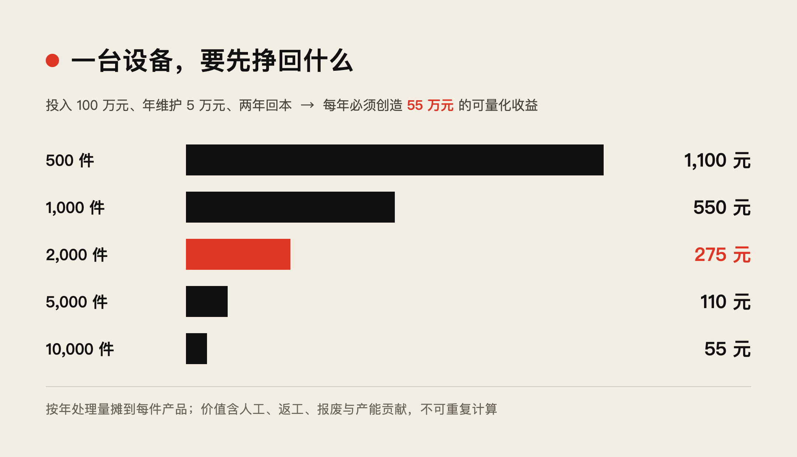
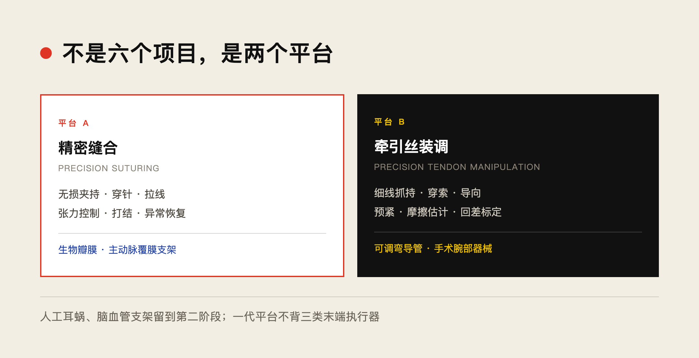
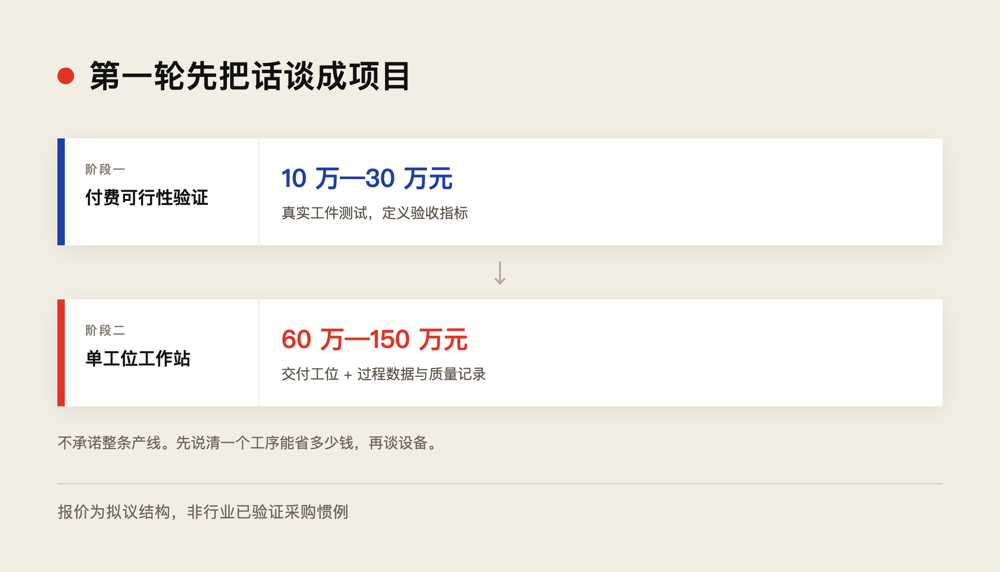

我认为这一类市场值得单独作为 Symmetry 的一条业务线研究，而且应该进一步细分。
最有价值的不是「制造医疗器械」，而是寻找同一种器械在制造端和植入端都存在精细操作难题的产品。
这意味着 Symmetry 有机会在同一客户生态中，先销售制造工作站和动物实验设备，再参与未来的手术或植入机器人项目。
▲ ■ ●
一、我最看好的六种产品
这里的 A 表示我建议优先寻找客户进行工艺验证，B 表示技术与战略价值高、但需要确认设备成本和实际自动化缺口。
这些不是凭空构想的产品。我找到了相应的器械厂招聘、制造商技术资料、真实生产项目和研究论文。下面逐项讨论。
▲ ■ ●
二、案例 1：生物人工心脏瓣膜
产品参考：经导管生物瓣膜与人工手工缝合生产工位。
制造的到底是什么？
以 Edwards Lifesciences 的经导管生物瓣膜，以及 Capstan Medical 的新型瓣膜为例。器械中有经过处理的生物组织瓣叶、金属支架、织物裙边及固定缝线。
实际工序包括：
- 01将柔软瓣叶准确定位到支架内。
- 02用镊子与针具固定组织。
- 03逐针穿过瓣叶、织物或固定位置。
- 04拉紧缝线，避免局部组织损伤。
- 05完成打结、检查、质量记录。
人工操作的证据非常明确。Edwards 在新加坡的官方招聘仍要求技术员在显微镜下使用针、剪刀、镊子缝合组织与支架。Capstan 的官方岗位更明确，要求在约 1 毫米厚的框架上手工缝合，执行连续针法、锁边及打结。
Symmetry 应该卖什么？
我建议的第一款设备不是全自主瓣膜制造机，而是：
Valve Tissue Assembly & Suturing Station（瓣膜组织装配与缝合工作站）
功能可以分为三个等级：
建议目标价格：80 万—150 万元 / 台。这是 Symmetry 可以测试的报价，不是行业成交价格。
最重要的竞争问题
Edwards 已有自动瓣膜缝合专利，包括自动定位夹具、曲针缝合与线环机构。
因此不能向客户宣称「别人还没有实现自动缝合」。
真正需要证明的是：面对不同型号、不同厚度和不同形变的瓣叶，Symmetry 是否能比专机更容易换型、更少损伤，并且稳定完成质量验收。
为什么这个客户特别有价值？
Capstan 这样的公司尤其有意思。它不仅制造新型瓣膜，还在开发机器人辅助的微创瓣膜治疗平台。
也就是说，它同时理解三件事：
- 瓣膜制造的困难；
- 介入输送与植入的困难；
- 机器人辅助操作的价值。
这正好符合你希望寻找的长期客户。
▲ ■ ●
三、案例 2：主动脉覆膜支架
典型产品：主动脉覆膜支架（Stent Graft），用于动脉瘤等血管疾病的腔内修复。
结构：柔性聚酯或 PTFE 覆膜，加上镍钛合金或其他金属支撑结构。
制造问题：要把金属骨架可靠固定到柔性管状覆膜上，有些产品通过缝合实现。
找到了什么实际证据？
这一次有一个很新的信息。
Terumo Aortic 在 2026 年 10 月 9 日发布了 Sewing Operator 招聘。工作地点在英国 Inchinnan 的血管移植物制造工厂，强调手工或机器缝纫经验、精细手工能力，并提供生产培训。
这证明相关移植物制造仍然有缝纫生产岗位。但该招聘没有明确每名员工缝制的是哪一型号，也不能据此认定每个覆膜支架仍由人工完成缝合。
还有一个更直接的历史工艺证据。
一项关于覆膜支架制造的专利指出，许多设计需要通过大量缝线将金属支撑结构与管状覆膜固定，一些设计涉及数百甚至数千针，人工操作时间和质量检查成本很高。
为什么它可能比瓣膜更适合作为第一项缝合试验？
瓣膜缝合时，要保护柔软的生物组织，组织异质性高。
覆膜支架则主要是工程材料：
- 管状织物或薄膜的尺寸和材料参数相对容易标准化；
- 金属支架的位置可以由专用夹具约束；
- 针具路径和缝线张力能够明确定义；
- 可以通过拉力、位置、外观和耐久性测试验收。
因此，我预计覆膜支架的某些缝合任务，可能比生物瓣膜更容易建立稳定的自动化工艺。
它仍然面临局部薄膜变形、针线张力、曲面工具操作和支架干涉，但这些可以先在标准化样件上验证。
建议的产品
Stent-Graft Suturing Station（覆膜支架自动缝合工作站）
- 目标售价：70 万—120 万元 / 台。
- 目标客户：覆膜支架制造商、相关血管器械研发企业和 CDMO。
- 最合适阶段：新型支架研发、小批量试产及多型号共线生产。
- 主要竞争：专用缝纫设备、旋转夹具、既有自动缝合专利。
我不会一开始就让机器人缝完整个长支架，而是测试：在一段带金属环的管状覆膜上，连续缝合指定数量的针脚，并稳定控制缝线张力。
它是一个很好的中间项目，因为既能发展连续缝合技能，又能连接长期的血管植入器械业务。
▲ ■ ●
四、案例 3：可调弯介入导管
典型产品：心脏电生理导管、可调弯鞘管、结构性心脏介入导管、微创内窥镜可弯曲导管。
核心部件：多腔柔性管身、牵引丝、末端牵引环、操作手柄。
制造目标：导管手柄转动一定角度时，远端必须按预期弯曲，且回差、摩擦与重复性符合设计规格。
真实的生产工艺
TE Connectivity 明确提供 Pull-Wire Assembly（牵引丝组件），包括牵引丝、牵引环、激光焊接、拉力测试和可调弯导管组件。其产品有单根、双根及四根牵引丝配置。
另一家导管制造商 Quasar Medical 在 2026 年发布的工艺说明中，明确包括：
- 将牵引丝安装到专用管腔。
- 将牵引丝与近端控制手柄连接。
- 测试弯曲角度、转向扭矩、回中能力及尺寸。
这些是已证实的生产工序。但还不能断言成熟工厂的每一步都依赖手工。
Symmetry 应该具体替代哪一步？
我建议不要做整个导管生产线，而是开发：
Micro Pull-Wire Assembly & Calibration Station（微型牵引丝装配与标定工作站）
一个可定义的工位流程：
- 01夹具固定柔性导管管身。
- 02机器人识别牵引丝及微型管腔入口。
- 03在受控推进力下将牵引丝送入指定管腔。
- 04辅助牵引环、端部固定件定位。
- 05施加目标预张力，完成锁定或焊接前定位。
- 06驱动手柄、测量末端形变，记录角度—张力—回差关系。
其中真正需要你的技术的是：柔性牵引丝在插入、拉动、预紧的过程中，其形态与接触状态不断变化。特别是穿线卡滞、摩擦变化和张力不均，单纯位置控制并不能充分解决。
设备报价与客户
建议销售价格：60 万—100 万元 / 工作站（待验证报价）。
适合的第一批客户：导管研发企业、医疗器械 CDMO、微创器械制造商。
典型潜在客户包括 TE Connectivity、Freudenberg Medical、Quasar Medical 以及各类介入器械 OEM。但这些公司本身已有较强的工艺与自动化能力，不能把它们当成尚未获得解决方案的客户。
我反而觉得，规模较小、正在开发新型号的导管厂商更适合第一轮合作。因为他们需要不断调整导管设计，专用自动化设备的换型成本可能较高。
从长期战略来看，导管的制造标定数据还能帮助理解其在人体内操作时的弯曲与摩擦特性。但制造标定模型不能直接代替人体内的运动控制模型。
▲ ■ ●
五、案例 4：机器人手术腕部器械
典型产品：手术机器人腕部抓钳、持针器、剪刀、可弯曲手术器械。例如 EndoWrist 一类器械。
核心机械结构：细长器械杆、末端腕关节、绳索／钢丝传动、滑轮和驱动接口。
这项技术与你目前做的 tendon-driven 灵巧手最直接相关。
有什么真实制造需求？
我找到了 Intuitive Surgical 的高级制造工程师岗位，明确负责高性能钨丝线缆的绞合、编织和自动化生产线开发。
Intuitive 的相关专利也指出，绳索张力的建立与维持直接影响手术机器人器械的运动精度，并描述了专门的张紧结构。
不过，需要区分两件事：
- 精细绞线的生产：Intuitive 已在发展高产量自动化，不是理想的通用灵巧手机会。
- 绳索穿绕、末端装配、预紧和标定：我认为值得调查，但目前没有足够公开资料证明这些环节仍大量依赖人工。
Symmetry 可以出售什么？
Surgical Instrument Tendon Assembly & Calibration Station（手术器械绳驱装配与标定工作站）
具体针对：
- 01细钢丝的抓取、导向和穿索。
- 02在微型滑轮中完成绕线。
- 03施加规定的绳索张力和预紧。
- 04操作器械末端，测量转角、回差及摩擦滞回。
- 05建立器械的驱动端—末端运动映射和质量检测记录。
建议售价：60 万—100 万元 / 台，含视觉、张力检测、精密装调工具与标定软件；为拟议配置及报价。
我认为这里存在一个很有意思的商业优势。
你现在研究绳驱灵巧手，遇到的摩擦、柔性、滑动、回差和控制误差，本身就是绳驱手术器械设计需要面对的问题。所以同一套技术可能有两种用途：
- 制造端：用于器械装配、张紧、标定和质量检验。
- 使用端：用于器械运动学补偿、力控和操作控制。
不过，这条路线也可能与你未来自研手术机器人的战略产生知识产权冲突。因此，需要事先约定背景 IP、客户产品数据、制造工艺成果与控制算法的权利边界。
这可能是六个项目里，与你现在的技术最接近、但客户知识产权边界也最值得重视的一个。
▲ ■ ●
六、案例 5：人工耳蜗电极阵列
典型产品：MED-EL、Cochlear、Advanced Bionics 的多通道人工耳蜗电极阵列。
关键结构：多根极细金属导线、微电极、柔性硅胶载体。
这个制造工序为什么特别值得关注？
2024 年发表在 Micromachines 的研究明确指出，传统人工耳蜗电极制造要在显微镜下，由熟练技术员将直径约 20—30 微米的导线逐根连接到电极上。制造过程劳动密集、精度要求高。
MED-EL 的官方工厂介绍中，还展示了将最多 24 根导线逐根放入专用成形模具、注入硅胶、固化与检测的工艺。
这里可以切入的不是整个电极阵列制造，而是三个非常具体的操作：
- 微导线抓取、引导和排列。
- 电极与导线连接前的对准及保持。
- 硅胶封装前的柔性阵列定位。
但这个项目可能超出当前三指灵巧手的直接能力范围。20—30 微米导线的操作，很可能需要专用显微末端执行器、微型夹持机构及相应的微力传感系统，不能只靠提高普通三指手的位置精度解决。
为什么它的长期战略价值特别高？
人工耳蜗已经出现真正的机器人辅助植入技术。
iotaMotion 的 iotaSOFT 系统用于辅助医生控制电极阵列进入耳蜗的速度。FDA 在 2026 年 1 月 9 日批准了其新的 510(k) 申请，适用范围扩展到 4 岁及以上患者。
这正好展示了两端：制造电极时，需要精确操纵柔性阵列；植入耳蜗时，也需要精确操纵同一类柔性阵列。
不过，制造和植入机器人面临不同的物理环境与监管要求，不能因此视为同一台设备。
我建议将该领域作为较高技术难度的战略合作项目，工作站目标报价暂设 100 万—200 万元，先寻找研发合作方，而不是立即自行开发完整量产设备。
▲ ■ ●
七、案例 6：脑血管血流导向支架
典型产品：Pipeline Flex、FRED、Surpass 等脑血管血流导向装置。
关键结构：由多根细金属丝编织而成的柔性网状支架，需要与微导管输送系统配合。
这是另一个非常典型的柔性操作任务。
有一项实际制造项目由 OxDevice 公布：他们为客户装配镍钛编织支架与激光切割支架，并将其安装到神经血管输送导丝上，开发了专用工装和检验流程。
而 Ascential Medical & Life Sciences 已经提供血流导向器件的自动化制造解决方案，特别提到将脆弱的编织镍钛结构装入微导管时，对尺寸公差和轻柔操作要求很高。
我会重点研究哪道工序？
Flow Diverter Loading Station（柔性支架装载工作站）
把一段具有自膨胀特性的金属网状支架，通过受控压缩和推进装入小直径输送系统。
难点在于：
- 支架被压缩时，直径与长度会同时变化。
- 金属网丝可能局部翘起、折叠或扭转。
- 推进过程中摩擦力会随状态变化。
- 装载之后仍需满足释放和恢复形状的要求。
机器人要控制的不只是推进力，还包括支架的局部形态。
这与你的形变跟踪和力控方法相当契合。
但这里已有专用自动化企业，因此我不会直接挑战成熟量产线。更有希望的是新型支架研发、小批量产品、多规格快速换型，以及现有工装难处理的特殊结构。
建议设备目标价格为 80 万—130 万元，优先争取联合开发项目。
▲ ■ ●
八、六个项目的产品与价格比较
以下是 Symmetry 拟议工作站的价格假设，不是已有厂商的公开成交报价。实际报价需要依据工具、传感器、洁净环境及工艺验证成本调整。
其中近期可行性是我的工程与商业判断，不代表已经完成客户验证。
价格能否成立，应该怎样算？
我建议统一采用一个采购模型，而不是从器械零售价推导机器人的价值。
假设：
- 工作站购买、集成和初始验证总投入 100 万元。
- 每年维护与运行支持 5 万元。
- 客户希望两年回本。
那么每年必须创造的可量化收益为：100 万 ÷ 2 + 5 万 = 55 万元。
把年度节约反算到每件产品：
这里的价值包括人工节省、返工减少、报废降低以及可量化的新增产能贡献，必须避免重复计算。

这个数字十分有用。
例如，某导管工位每年处理 5,000 根，每根只节约 30 元人工，则一年只有 15 万元收益，无法支持上述 100 万元级设备两年回本的要求。
如果同时能够减少昂贵半成品报废、缩短工程换型时间，达到每根 110 元的综合价值，则商业吸引力明显提高。
所以，不能因为医疗器械售价高，就认为精密装配设备一定卖得贵。需要找出具体工序每件能创造多少价值。
▲ ■ ●
九、我的选择：先做两种共性工作站
这是我觉得最重要的战略建议。
六种医疗器械虽然不同，但可以归纳为两类技术能力。

产品平台 A：Precision Suturing，精密缝合与柔性组织装配。共性能力是无损夹持、穿针、拉线、张力控制、打结、异常恢复。对应人工心脏瓣膜与主动脉覆膜支架。
产品平台 B：Precision Tendon Manipulation，精密牵引丝装配与标定。共性能力是细线抓持、穿索、导向、预紧、摩擦估计、回差标定。对应可调弯导管与手术机器人腕部器械。
其中 B 平台离你目前的绳驱灵巧手控制研究更近；A 平台则与组织剥离、镊子操作和未来自主缝合具有更强连续性。
人工耳蜗和脑血管支架可以在第二阶段引入，不应该迫使第一代平台同时满足 20 微米导线、复杂网状支架和柔性组织缝合三类完全不同的末端执行器要求。
▲ ■ ●
十、第一轮客户应当怎么谈？
我建议不要首先向客户推销「通用灵巧机器人」，而是拿着具体工序谈。
我建议把前期项目设计成付费技术验证，而不是一开始承诺交付完整生产线。

例如先争取 10 万—30 万元的可行性验证合同，完成真实工件测试和验收指标定义；如果客户认可，再讨论 60 万—150 万元的正式工作站订单。这是建议的商务报价结构，不能视为已经验证的行业采购惯例。
还有一项必须提前考虑：工业制造工作站一般不等于需要以植入式医疗器械身份申请上市许可，但一旦进入医疗器械生产工艺，客户仍需要设备确认、过程验证、质量追溯和变更管理。美国 FDA 的 QMSR 已经在 2026 年 2 月 2 日生效，并纳入 ISO 13485:2016 相关要求。
所以 Symmetry 第一代工业产品最好从一开始就保留操作力、位姿、工艺参数、报警与质量记录功能。它们既是控制数据，也是客户验证和审计的重要材料。
▲ ■ ●
十一、最后的战略排序
如果以技术连续性、真实需求、客户可接触性和未来手术业务关联作为标准，我会给出这样的顺序：
这里的排序是研发与商务探索顺序，不是行业规模排名。
同时，我会给这些项目加一个严格的筛选条件：优先选择既有制造难题，又有动物实验与未来植入机器人需求的医疗器械客户。
但不是所有器械制造商都会自研手术机器人；同一家公司内部的制造、研发和临床部门，也未必共享预算。因此，长期客户价值应当作为战略加分项，而不是自动计入销售预测。
我的最终建议
Symmetry 的医疗器械制造业务，初期不应泛泛定位成「医疗器械自动化」，而应该聚焦：
Precision Assembly of Implantable and Surgical Devices——植入与手术器械精密装配。
先围绕两种难以标准化的操作建立产品：柔性组织缝合，以及微型牵引丝装配与标定。它们有明确的工艺任务，可以测量成功率、损伤、张力、节拍和返工；同时又与你最终回到人体手术的技术路线具有连续性。
相比普通工业客户，这些项目还有一层额外价值：今天积累器械制造知识，明天有机会把这些知识用于器械植入与手术操作。
我尤其看好「微型牵引丝装调 + 柔性组织缝合」这对产品组合。它们可以分别成为 Symmetry 的两个可交付工业工艺包，而不必把公司拆成六家专用设备公司。
本文为内部研究笔记，价格均为拟议假设，不构成对具体客户或产品的收益预测。